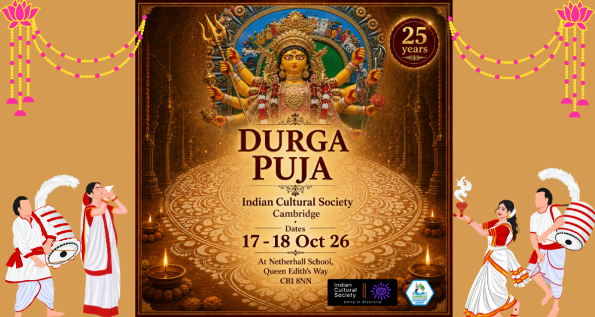

Oct
17–18
Cambridge Durga Puja — Silver Jubilee Celebrations
- When
- VenueThe Netherhall School, Queen Edith's Way, Cambridge CB1 8NN
Our 25th Durga Puja — two days of puja, cultural programmes, food and togetherness as ICS celebrates its Silver Jubilee.
Buy tickets on Eventbrite